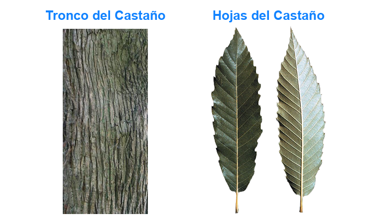
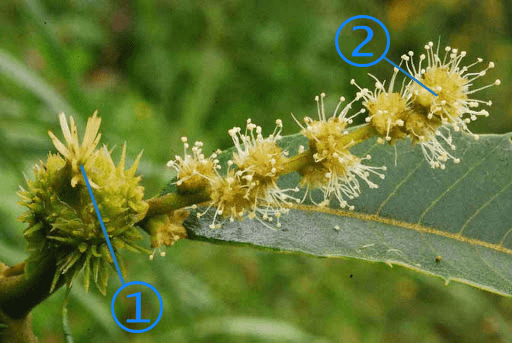
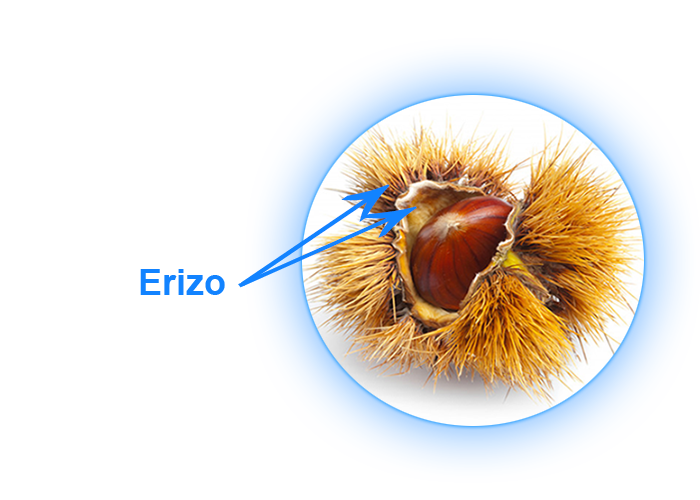
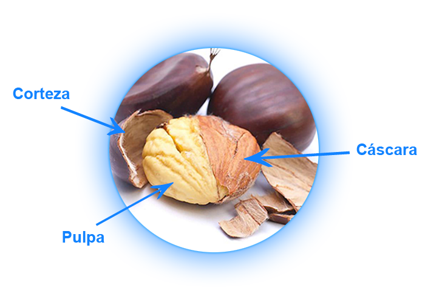
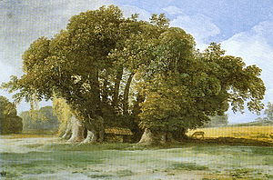
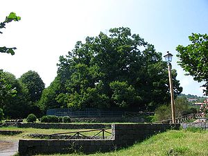
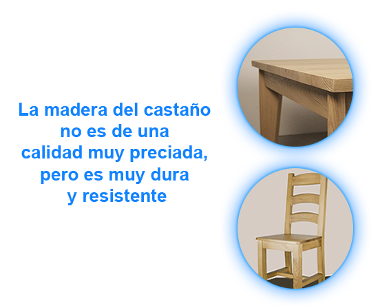

¿Qué es el Castaño?
Este hermoso árbol, originario del sur de Europa y del Asia Menor, es tan útil por sus nutritivos frutos (suele llamárselo por ello “árbol del pan de montaña”) como por su fuerte madera, de la que tambien se extrae materias curtientes (tanino).
El castaño común (castanea sativa) puede alcanzar de diez a doce metros de altura. Presenta tronco recto, de corteza gris oscura longitudinalmente hendida, y follaje denso. Las hojas lanceoladas, de quince a veinte centímetros de largo, son caducas y tienen la cara superior del limbo de color verde oscuro con el envés más claro. El borde es aserrado. Pertenece a la familia de las fagáceas o cupulíferas. Este último nombre obedece a que los frutos de las plantas de este grupo botánico están envueltos en una cúpula lignificada, a menudo provista de aguijones o de escamas.
Los frutos del castaño (las castañas) están encerrados, generalmente de a tres, en una cápsula (el erizo) provista de agudas púas, que se abre al madurar, liberando las semillas (frutos dehiscente).
El castaño es un vegetal monoico (de “mono”, uno solo, y “oikos”, casa), es decir que en la misma planta se encuentran flores unisexuales masculinas (con estambre) y femeninas (con pistilos). Por la forma de su polinización, constituye una excepción dentro de la familia, pues la parte más activa se realiza no por el viento (polinización anemófila), sino mediante insectos, especialmente ciertos coleópteros (polinización entomófila).
Existen diversas especies de castaños (silvestres y cultivados) que prosperan sobre todo en suelos silíceos (arenosos o graníticos) en climas templados: España, Italia, Portugal, Francia, norte de África, este de Asia.

En Estados Unidos, la especie Castanea dentata (“chestnut”), de madera castaño rojiza, se explota intensamente como forestal.
En Argentina, el castaño se adapta a una amplia zona (toda la región central) aunque las condiciones más favorables las encuentra en las provincias andinas. En Mendoza existen plantaciones que en invierno rinden normalmente sus cosechas. Los frutos se conservan en frigoríficos hasta las fiestas de fin de año. En Chilecito (La Rioja), en la finca Samay Huasi, que pertenecía al Dr. Joaquín V. González, existen en pleno desarrollo los frondosos castaños que plantó este ilustre escritor.
El castaño vive tranquilamente en compañía de otros árboles. Sus amigos predirectos son las acasias, las encinas, los abedules, con los cuales forma frondosos bosques.
El castaño florece en la primavera; sus frutos maduran en el verano. El castaño tiene dos clases de flores: estaminíferas (con estambres), que producen el polen, y flores con pistílos, que recogen el polen y se convierten en frutos. Los insectos se encargan de llevar el polen de una flor a otra (polinización entomófila).
1) Flor femenina: Éstas son flores con pistilos. Están agrupadas de tres en tres. Cuando ya han recibido el polen, comienzan a engordar para terminar por convertirse en jugosas castañas. Las lengüecillas verdes que las rodean se convertirán en corteza.
2) Flor masculina: Éstas son flores con estambres. Están formadas por escamitas verdes, de las que sobresalen los estambres cubiertos de polen amarillo. Después de desprender el polen, estas flores se secan y caen.
Para conseguir un nuevo castaño, se siembra una castaña. Ésta germina y da una nueva plantita. Cuando la plantita alcanza unos dos metros de altura, se trasplanta. Sus frutos, sin embargo, serán pequeños y poco sabrosos; por ello se le injerta una rama de castaño de calidad para que produzca mejores frutos.
 En las laderas del volcán siciliano Etna, se encuentra el milenario “castaño de los cien caballos”, llamado así porque según la tradición histórica, bajo su amplísima copa encontró reparo, al sobrevenir una repentina tormenta, la reina doña Juana de Aragón y su montado cortejo de nobles de Catania, que visitaban el lugar. El gigantesco árbol tiene en la base más de cincuenta metros de circunferencia.

Castaño retratado en 1777 por Jean-Pierre Houël

El Castaño actualmente
La familia de los castaños vive muy a gusto en un plano medio; en los montes, que son su casa, encontramos los castaños entre los 400 y 1.000 metros.
Las castañas se pueden consumir de muy diversas maneras: